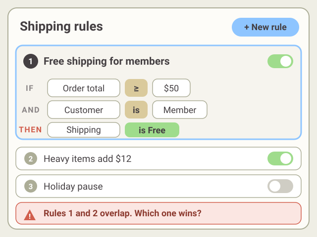
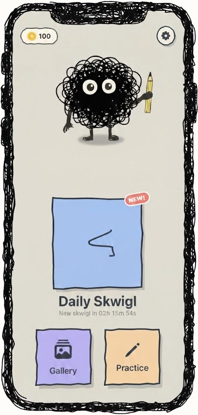
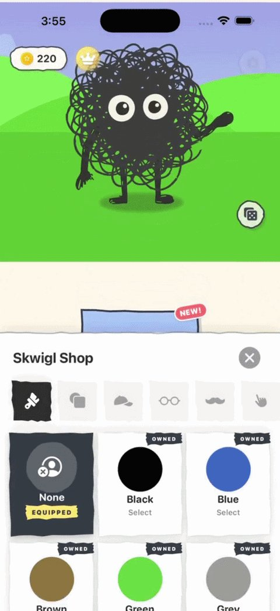

First off, to answer the question on your mind: yes, I used AI to build this portfolio.
Claude, with a little Gemini, did most of the building. The ideas didn’t come from it. The look, the animations, the interactions and even the hidden easter eggs are mine. I didn’t one-shot anything. I went back and forth on almost every detail until it matched what was in my head. The screenshots and some of the music are my own, with no AI.
Why I use it
For a long time, my ideas stayed stuck in my head or in a mockup file. I’m a designer, not an engineer. I used to build HTML emails and landing pages on the marketing team at Awardco, and I’ve tinkered with game making in GameMaker, Unity and Godot. That got me a proof of concept or a single level. Then I’d hit the limit of what I knew, or of my time, and I’d have to drop the project or wait for someone else to build it.
Now I can take an idea to a working prototype on my own. With a little help from friends, I can take it all the way to a live app. AI doesn’t replace curiosity or taste. Those are still on me.
At work
Prototyping a rules engine
I led a two-and-a-half-day discovery sprint on a rules engine with complex rules, prototyping with Copilot in VS Code.

A recreated example I made for this page. Not the original.
We described the problem, and AI helped capture how complex the data and rules were. It also came up with functionality we hadn’t thought of.
I took what we learned and turned it into documented Figma designs and specs, then worked with engineering to take it from there.
Tilt Drifter is a free iOS game. You tilt your phone to steer a ball, grab collectibles and power-ups, dodge obstacles and chase a high score. The whole app pulses and lights up to the music, and I gave it a retro CRT look. I challenged myself to finish it and get it in the App Store in under a month, and I did.
Skwigl is a daily drawing game. I came up with the idea and made the music. I designed and animated the characters in Illustrator and Rive, with help from a designer. AI helped with the UI, the drawing and the daily seed.
The seed is my favorite part. I figured I’d have to store every skwigl somewhere like Firebase. Instead I told AI the problem, not the solution. It suggested using the date, so everyone in the world gets the same skwigl each day.


I didn’t do it completely alone. An engineer helped me set up publishing and gave me technical advice. A designer gave me feedback and shared the illustration and Rive work on Skwigl. They also helped me with App Store Connect, and I can now submit and publish apps on my own. But every change to the code, and every prompt, was mine.
Where it falls short
AI doesn’t fully understand design systems yet. It’s great early on for discovery and ideas, but it still takes a person who knows the brand and the system to get to a prototype that’s ready for a front-end engineer. I expect that to improve. For something brand new, it’s not a limit at all.
AI didn’t change why I design. It changed what I can build.
I value genuine creativity and look for any chance to build something truly unique. I pair human-centered UX craft with AI prototyping tools to take ideas from wireframes to prototypes people can test.
What energizes me most is people. I love working with cross-functional teams, learning from user research, and designing clear solutions that make a real impact.
Outside of work, I’m usually making music on guitar, tinkering with side projects, or spending time with my wife and kids.
Skills and tools
Tap a skill for the story behind it.
I know well
I currently use Figma for design, annotations, and prototyping. I was head of the design system at Awardco for 1.5+ years, where I created and managed most of its components and usage guidelines.
I worked as a product photographer for 8+ years, where I learned to use Photoshop to touch up images. I also spent 1.5 years on the Awardco marketing team, creating banner images and other assets for clients and marketing materials.
I got more proficient with Illustrator on the Awardco marketing team, then put it to work on DCity, my procedural NFT project. I illustrated 600+ images and designed 30+ fake businesses, each with its own logo (some better than others).
I used Maze for a time to build prototypes for internal testing and to gather feedback.
I currently use Useberry for internal and external user testing and surveys.
I’ve built Pendo dashboards to track success metrics for features and products. I was also in charge of our Pendo guides for a time, and helped create a process for when and how to use a guide, plus the design standards for them.
Claude is the tool I use most for building tools, apps, and websites.
I use Gemini for image and copy generation and for personal projects. It’s my go-to when I need something quick.
ChatGPT is my second option when Gemini doesn’t give me the assets or results I need. Sometimes they swap, and Gemini becomes the backup.
I’m learning
On the Awardco marketing team, I set a goal to learn After Effects. I used it to make a loading icon for the platform and animations for hackathon projects.
I used Character Animator to create an 8-episode cartoon series for culture building at our product quarterly check-ins. I learned to build character rigs and do simple animations.
I learned Premiere to edit that 8-episode cartoon series, and to edit demo videos for hackathon projects.
I learned Rive while building Skwigl. I used it to animate the character, and used data binding to build a customization screen where players buy cosmetics for their Skwigl buddy. It’s a powerful tool, and I’m still learning and want to explore more of it.
I’m learning GitHub, mostly for personal projects. At work, we use git commands to commit and push prototypes for dev hand-off.
I’ve used Jira for years, and lately I’m in it more and more. It’s a hard tool to learn, since good use depends so much on the organization or even the department.
I know a little
On the Awardco marketing team, I built custom homepages for clients and made our monthly newsletter email, all in HTML and CSS.
I have some experience with GameMaker, Unity, and Godot. These days I use Claude Code and the Godot MCP to make games for iOS.
I use Logic Pro to record demos for personal projects. I’ve also played in a few bands and recorded demos with most of them.
0 pts0
×1combo
Hold to crouch, release to jump · in the air: hold to drop faster, double-tap for tricks